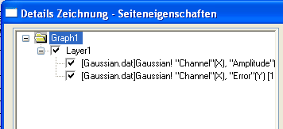

Die Hierarchie Seite > Layer > Diagramm
Jedes Origin-Diagrammfenster wird mit Hilfe einer Vorlage erstellt --
entweder standardmäßig oder benutzerdefiniert. Die Inhalte jedes Origin-Diagrammfensters
sind in einer Hierarchie Seite > Layer > Diagramm aufgeführt.
Die Seite befindet sich an oberster Stelle (dargestellt durch das Symbol
Diagramm1 in dieser Abbildung des linken Bedienfelds des Dialogfelds Details
Zeichnung).
- 
Allgemein:
- Die Seite muss mindestens einen -- und kann mehrere -- Diagrammlayer
enthalten.
- Die Layer beinhalten (normalerweise) eine oder mehrere Diagramme.
- Das Diagramm besteht (normalerweise) aus einem oder mehreren Datenpunkten
(in einem 2D-Diagramm ist der Datenpunkt ein einzelnes XY-Paar, ein Fehlerbalken
oder eine Datenbeschriftung; in 3D-Diagrammen ist der Datenpunkt eine
XYZ-Dreiergruppe).
Jedes Objekt in dieser Hierarchie von Seite-Layer-Diagramm hat zugeordnete
Objekte und/oder Eigenschaften. Es wird hilfreich sein, einen Sinn für
die Objekte und Eigenschaften, die zu jeder Ebene der Hierarchie zugeordnet
werden, zu entwickeln. Beachten Sie, dass sich neben jedem Layer und jedem
Diagramm ein Kontrollkästchen befindet, mit dem Sie das Element entweder
zeigen (aktiviert) oder verbergen (deaktiviert) können.
Zum Beispiel:
- Wenn Sie zum Beispiel die Größe einer Diagrammseite verändern
möchten, so dass ein exportiertes Bild des Diagramms genaue Abmessungen
hat, werden Sie die Eigenschaften der Diagrammseite bearbeiten müssen.
Allgemeine Informationen zur Diagrammseite finden Sie unter Diagrammseite.
- Wenn Sie die Achsenskalierung eines Diagramms verändern
möchten, ist es hilfreich zu wissen, dass die Achsen ein Teil des Diagrammlayers
sind -- eine verschiebbare, in der Größe veränderbare Einheit bestehend
aus (1) einem Satz X- und Y- (optional Z-) Koordinatenachsen, (2) einer
oder mehreren Datenzeichnungen und (3) zugeordneten Textbeschriftungen
und Zeichenobjekten. Allgemeine Informationen zum Diagrammlayer finden
Sie unter Diagrammlayer.
- Wenn Sie die Symbolform Ihres Punktdiagramms ändern möchten,
hilft es zu wissen, dass die Symbolform eine Eigenschaft des Diagramms
ist. Allgemeine Informationen zum Diagramm finden Sie unter 2D-Diagramm.
Beachten Sie, dass jede Eigenschaft der Diagrammseite auf alle Diagrammlayer
dieser Seite angewendet wird und jede Eigenschaft eines Diagrammlayers
auf alle Diagramme dieses Layers. Bei Zeichnungen wird jede Eigenschaft
auf alle Datenpunkte angewendet, außer wenn bei einem einzelnen
Datenpunkt Anpassungen durch den Anwender gemacht wurden (gilt
nur für 2D-Diagramme und Linien- & Symboldiagramme).